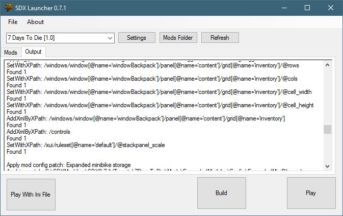

Understanding the XML Config
Config\BiggerBackPack.xml:
This mod makes a few changes to files that the other SDX Mods haven't shown you yet. The Windows.xml under the XUi, and the xui.xml file under the Config folder.
<configs> <config name="XUi/windows"> <!-- Back pack dimensions are set for 5 x 9, based on a 45 slot back pack --> <set xpath="/windows/window[@name='windowBackpack']/panel[@name='content']/grid[@name='inventory']/@rows">5</set> <set xpath="/windows/window[@name='windowBackpack']/panel[@name='content']/grid[@name='inventory']/@cols">9</set> <set xpath="/windows/window[@name='windowBackpack']/panel[@name='content']/grid[@name='inventory']/@cell_width">67</set> <set xpath="/windows/window[@name='windowBackpack']/panel[@name='content']/grid[@name='inventory']/@cell_height">67</set> <remove xpath="/windows/window[@name='windowBackpack']/panel[@name='content']/grid[@name='inventory']/item_stack" /> <append xpath="/windows/window[@name='windowBackpack']/panel[@name='content']/grid[@name='inventory']"> <item_stack_inventory name="0"/> </append> </config> <config name="XUi/controls" >https://raw.githubusercontent.com/7D2DSDX/Mods/master/BiggerBackPack/Config/BiggerBackPack.xml <append xpath="/controls"> <item_stack_inventory> <rect controller="ItemStack" style="itemStack, hover"> <!-- Snipped for brevity. Check out the full XML here: https://raw.githubusercontent.com/7D2DSDX/Mods/master/BiggerBackPack/Config/BiggerBackPack.xml </rect> </item_stack_inventory> </append> </config> <!-- changing the scale of the panel to better fit --> <config name="xui"> <set xpath="/xui/ruleset[@name='default']/@stackpanel_scale">1.03</set> </config> </configs> |
Notice we are using <config name="XUi/windows"> ? This lets SDX know that the windows.xml file is to be searched under the XUI folder. By default, SDX will search for the Data/Config/*.xml files, so for any subfolders off of Data/Config, you'll need to specify the folder name.
The next part about this Config is the <set xpath> line. This line lets us change individual attributes in XML nodes, rather than adding a new recipe or block, as we did in the other examples. The Lines look scary, but it's not that bad! It allows us a very precise change in XML files.
Let's break it down:
<set xpath="/windows/window[@name='windowBackpack']/panel[@name='content']/grid[@name='inventory']/@rows">5</set> |
/windows |
Top level node in the file </windows> |
/window[@name='windowBackpack'] |
Look for the <window> that has a name of "windowBackpack" |
/panel[@name='content'] |
Look for the <panel> tag that has the name of 'content', that's inside of the above window |
/grid[@name='inventory'] |
Look for the <grid> tag with the name inventory, that's inside of the above panel |
/@rows |
Look for the rows attribute |
There's a website that'll help you building your more complicated xpath: https://xmltoolbox.appspot.com/xpath_generator.html
When you run it through SDX Launcher, you'll see this:

Set With XPath indicates what value it's looking for, and how many matching lines it found.
Take a look at the SDX XPath Configurations for more examples and help on this.
Created with the Personal Edition of HelpNDoc: Full-featured Kindle eBooks generator